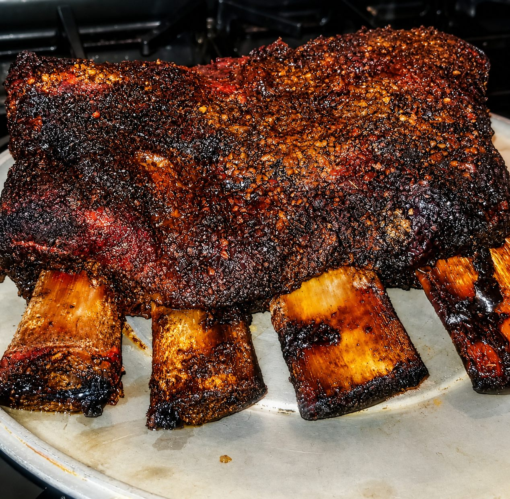

Shop the Meat, Not the Label
Food Investigation · Behind the Label Series
I was at the grocery store the other day, and it hit me how differently people shop. Some move with a plan, non-perishables first, then produce, then meat, very well organized, they move throughout the market with great efficiency. Some walk in with a list and a mission, they know exactly what they've come for and they waste very little time. Me? I'm a little chaotic in my approach. No list, no real structure. I wander around, picking up random stuff and putting it back. I sometimes get inspired mid aisle and end up cooking something that I didn't plan on at all. Eventually I'll make my way to the meat section. That's always where I slow down.
As you walk down the meat aisle you may start noticing the labels. Grass-fed, Antibiotic-free, Pasture-raised, Organic. The prices climb with each claim, like a ladder of virtue. Personally I've cooked it all, high end, budget friendly, and everything in between. If I'm being honest, I can't tell the difference. Not even slightly. So I don't shop for the labels. I shop for the meat.
I'm looking at color, fat distribution, checking firmness or lack thereof. I check the grain. I'm envisioning the final product on the plate, how the fat will render, how the meat fibers will look when sliced, the shape the meat will take beside our starch and vegetables. Eating is as much about the look as it is about the taste sometimes. So for me, the label is secondary.
Now if a client asks for something specific, sure I'll grab the grass-fed. But on my own time, I'm choosing what looks right. That day, though, I overheard a conversation that stuck with me. A guy explaining to someone, confidently, why grass-fed beef is better, healthier, cleaner, and more "real." The kind of certainty that makes you pause, even if you've been in kitchens long enough to trust your instincts. Maybe I'm wrong, I've definitely been wrong before. So I went home and started digging. What I found wasn't exactly surprising, but it was revealing.
Back in 2015, Congress repealed mandatory Country of Origin Labeling for beef. After that, imported beef could legally be labeled "Product of USA" as long as something happened to it here, grinding, slicing, repackaging. The animal could be born, raised, and slaughtered somewhere else entirely, and still end up carrying an American label. That changed at the start of 2026. Now, if something says "Product of USA," it has to be born, raised, slaughtered, and processed here. That's a real shift, but there's a catch. Origin labeling is still voluntary.
So while companies can't make a false claim anymore, they also don't have to tell you anything at all. If there's no label, you're back to guessing. The system removed one kind of confusion, but it didn't replace it with clarity. Then there's "grass-fed." It sounds precise. It sounds like a standard, but it's not, at least not in the way most people think. It's a marketing claim, not a universally enforced certification. There's no single, consistent inspection behind every package that says it.
And here's where it gets even more interesting, a lot of what's labeled grass-fed is actually grass-fed, and grain-finished. Which is most cattle. So if you've ever felt like it tastes the same, like you can't quite pick up the difference everyone talks about, you're not crazy. It might actually be the same, or close enough that the label is doing more work than the meat itself.
There are stricter certifications out there. Some producers follow tighter standards. But those are the exceptions, not the baseline.
Standing in that grocery store, I realized something simple. I'd been trusting my eyes and my hands more than the label for years, not out of principle, just instinct, and instinct, in this case, was closer to the truth than I thought.
Because at the end of the day, the label tells a story. Not always a lie, but not always the full truth either. It's a layer, branding, marketing, sometimes aspiration. The meat is still the meat, and as a chef, that's what I'm working with. That's what hits the pan. That is what ends up on the plate.
So I'll keep shopping the way I shop, a little chaotic, a little intuitive, building meals in real time. I'll keep looking for good color, good fat, and good structure. I'll still honor a request when it matters, but I won't pretend the label is something it's not. Because sometimes the difference you're looking for isn't in the claim printed on the package. It's in how closely you're actually paying attention.
— Chef Dumela